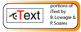

|  |
iText 1.24: |
This page represents the iText Library of Lowagie and Soares, as abridged by Peter Midford and installed in Mesquite. The only modification of iText for Mesquite is the removal of java classes not needed for PDF generation. The source for the files in the abridged version is at Mesquite web site. For the latest and complete versions of iText, along with documentation and tutorial material, please go to iText's homepage. Currently iText is not running on Java 1.1 systems (e.g., MacOS 9), although we hope to have such support in the future.
iText is distributed under the terms either of the Mozilla Public License or the GNU Lesser General Public License.